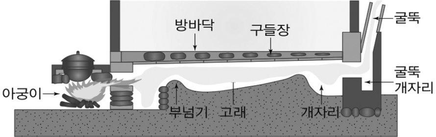

1번
다음은 온돌에 대한 설명이다. 빈 칸에 들어갈 열의 이동 방법을 고르세요.

온돌은 우리나라 고유의 난방 장치이다. 아궁이에 불을 때면 뜨거운 열기가 방바닥 아래의 빈 공간을 지나면서 구들장을 덥히고, 따뜻해진 구들장의 열기가 방 전체에 전달되는 과정을 통해 난방이 된다.
온돌은 열의 이동 방법인 ㉠
선택하세요.
용해
전도
와 ㉡
선택하세요.
응결
대류
를 모두 이용하는 난방 방식이다.